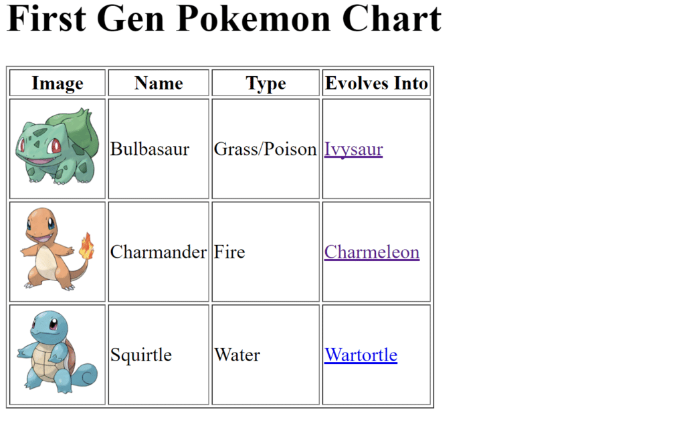
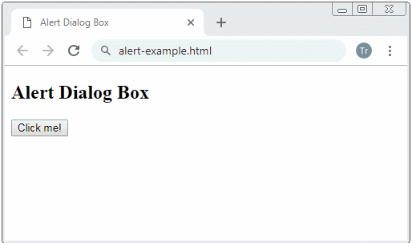
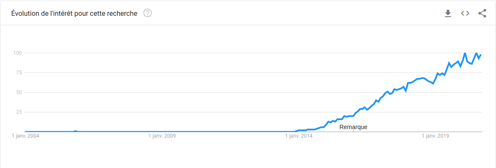
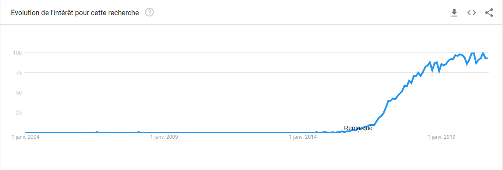

- Tim Berners-Lee
C'est ce que nous allons essayer de faire dans ce chapitre, nous commencerons par une chronologie simple mais représentative de l'évolution des sites web, puis nous enchaînerons sur l'impact que cette évolution a pu avoir sur les pratiques de développement et du côté des utilisateurs.
Cette chronologie présente les technologies qui ont permis et permettent encore aujourd'hui de faire des sites web. Il ne s'agit pas d'une liste exhaustive, mais simplement des technologies qui ont pour objectif de présenter de l'information à des utilisateurs au travers d'un site web. Autrement dit, cette chronologie n'inclut pas les technologies telles que le protocole HTTP ou Internet en général. Ces dernières permettent de faire circuler les fichiers web qui sont créés à partir des technologies que nous allons évoquer.
C'est un langage de balisage fait pour créer des pages web[2]. Dans sa première version, il contenait déjà tout ce qu'il fallait pour écrire du texte et le structurer sémantiquement. C'est un bon exemple d'outil mêlant le formalisme "humain", c'est-à-dire la possibilité d'écrire en langage naturel (Français, Anglais, ...) et le formalisme logique via des balises, compréhensible par un programme informatique. Ci-dessous un exemple du balisage HTML de 1991 venant d'une des plus anciennes page web référencée.
<title>Hypertext Links</title>
<h1>Links and Anchors</h1>
A link is the connection between one piece of
<a href=WhatIs.html>hypertext</a> and another.
La première page web contient les informations sur le HTML et tout l'écosystème du Web de l'époque (HTTP, le serveur web qui hébergeait la page, ...). Elle est disponible à cette adresse : http://info.cern.ch/hypertext/WWW/TheProject.html.

Première page web de l'Histoire. Crédit : Tim Berners-Lee, CERN.
Aujourd'hui, dans notre conception low-tech, l'utilisation de HTML n'est pas débattable tant cette technologie est importante et se trouve dans tous les standards du Web. Au contraire, dans notre approche low-tech, nous aurons très envie de remettre le HTML au centre de notre développement. En effet, le HTML contient déjà tout ce qu'il faut pour présenter/partager de l'information ; ce ne serait pas absurde de dire que tous les sites web qui ne font que présenter de l'information peuvent exister sans avoir besoin des prochaines technologies de cette chronologie.
L'histoire des sites web incluent aussi les technologies qui permettent de générer du HTML. Le PHP en est un bon exemple ; il s'agit d'un langage utilisé pour écrire des programmes qui seront exécutés sur un serveur web. Basiquement, du côté client (c'est-à-dire utilisateur) le navigateur envoie des requêtes à un serveur qui va répondre en envoyant les fichiers permettant au navigateur d'afficher le site. Un programme PHP permet de dialoguer avec le serveur afin qu'il génère des pages web.
Les générations "côté serveur" de page web ont été très importantes dans l'évolution des sites web puisqu'elles ont permis, avec l'utilisation de bases de données, de personnaliser les pages transmises en fonction de l'utilisateur de ces pages et d'autres paramètres comme l'adresse du site. On pourrait imaginer que Wikipédia (utilisant le PHP) n'héberge pas dans ses serveurs un fichier HTML par article (et par langue) mais que les pages sont générées à la demande d'un utilisateur avec des données venant de leur base de données, en effet il y a plus de 2 millions d'article sur Wikipedia qui font en moyenne 2500 octets soit donc environ 5 Go. Les articles pourraient donc théoriquement être contenus dans un serveur mais le problème est que le nombre d'article sur Wikipedia augmente chaque jour, donc faut donc réduire le plus possible la taille de stockage des informations. On peut aussi dire que la mise en page étant toujours la même il n'est pas nécessaire de stocker tout le fichier HTML, ainsi juste stocker les informations dans une base de données reste la solution la plus pratique, c'est ce qu'à fait Wikipedia.
Le HTML a connu une grande évolution après sa première publication. De nombreuses améliorations ont été proposées et intégrées dans une nouvelle version sortie en 1995 : HTML 2.0.[2]
Voici ci-dessous un exemple de code en HTML 2.0 venant de www.w3.org
<OL>
<LI>Click the Web button to open URI window.
<LI>Enter the URI number in the text field of the Open URI
window. The Web document you specified is displayed.
<ol>
<li>substep 1
<li>substep 2
</ol>
<LI>Click highlighted text to move from one link to another.
</OL>
Parmi ces améliorations, on retrouve les tableaux, qui permettent de
commencer à styliser ses pages web. Par exemple, un développeur pouvait
utiliser la balise table pour donner à sa page web une
apparence de journal. Cette version a aussi permis d'incruster des images
et des expressions mathématiques.
Nous incluons les tableaux dans notre chronologie car ils ont permis d'améliorer l'esthétique des pages web et de les rendre plus intuitives pour les utilisateurs. Bien sûr, l'utilisation de tableaux de manière esthétique est à prohiber car sémantiquement c'est une erreur. Il faudra attendre le CSS pour cela. En effet, les tableaux HTML ont été créés pour organiser des données sous formes de tableaux, les utiliser de manière esthétique risque de considérablement ralentir le navigateur car il doit télécharger tout le tableau pour l'affichage. C'est aussi plus difficile de maintenir ce code, ainsi que de rendre le site responsive.
Exemple de page web avec tableaux. Crédit : Iconic Developers
En surfant sur le Web durant ces temps-là, on peut commencer à voir des pages web qui suivent le "block design". C'est-à-dire des pages web donc les sections sont séparées en bloc grâce à des tables.
Parmi les contributions majeures, il y a aussi les formulaires du navigateur NCSA Mosaic[2] qui permettent à la page web d'interagir avec d'autres programmes informatique. C'est une avancée majeure en ce qui concerne l'interactivité du Web. On peut commencer à avoir de véritables applications servies sur le Web et plus uniquement des informations à partager. Les principales différences entre une application web et un site web sont qu'une application est contenue dans un site web, le développement d'une application web est bien plus coûteux et chronophage que celui du site web dans lequel il est contenu et qu'un site web est une source d'information alors qu'une application web fonctionne de manière interactive.
JavaScript (JS) conclue l'année 1995 en beauté. Les développeurs peuvent désormais intégrer des éléments de logique booléennes dans leurs pages web et ainsi manipuler les objets conventionnels des informaticiens comme les instructions conditionnelles et les boucles.
Les utilisateurs peuvent maintenant interagir avec les pages qu'ils consultent : cliquer sur des boutons qui ont chacun un comportement spécifique, jouer à des jeux vidéos, etc. Du côté des développeurs, le JavaScript change aussi beaucoup de choses, ils peuvent désormais : valider ce que l'utilisateur tape dans un formulaire, transmettre des informations sur le comportement de l'utilisateur, modifier dynamiquement le site web pour afficher des publicités, etc.
Exemple de JavaScript. Crédit : o7planning.org
Flash offre la possibilité de manipuler des graphiques vectoriels et tout type de contenu multimédia destiné à être publié sur le Web grâce à Flash Player. Les pages web peuvent maintenant intégrer du contenu multimédia bien plus riche qu'auparavant, en particulier des animations, des publicités et des jeux vidéos.
C'est une autre technologie qui contribue à l'enrichissement des sites web. Cependant, Flash a maintenant quasiment disparu, la raison en est très simple, Apple n'a pas accepté d'intégrer Flash à ses produits (dont l'iPhone) ce qui a fortement contribuer au déclin de Flash. D'autres problèmes sont toutes fois à noter comme le fait qu'il a été une des seules technologies du web qui ne soit pas libre et qu'elle comportait certains problèmes techniques et de sécurités.
Donnons du style à nos pages web !
L'ajout des feuilles de styles, bien qu'elles aient mis du temps à être bien intégrées aux navigateurs, montre l'envie de vouloir séparer la forme du fond. On gagnera alors en structuration logique et donc en pérennité, maintenance, portabilité et malléabilité du contenu.
La stack du développement web devient :
Les feuilles de styles permettent de styliser n'importe laquelle des balises HTML présente dans une page web (titre, paragraphres, images, listes, formulaires, etc).
La page web que vous lisez actuellement est un exemple de HTML augmenté par du CSS. On peut voir ci-dessous les détails de mise en forme de la majorité de cette page comme par exemple que notre zone de texte représente 70% de la taille de la page ou encore que la police par défaut est "Segoe UI" mais que si le navigateur ne l'a pas en mémoire il peut utiliser plusieurs polices de remplacements.
.main {
width: 70%;
margin: auto;
padding: 10px;
text-align: justify;
font-family: "Segoe UI", Tahoma, Geneva, Verdana, sans-serif;
background-color: ghostwhite;
border-radius: 15px;
box-shadow: 0px 0px 24px 2px rgba(202, 209, 209, 1);
}
Jusqu'à présent, tous les sites web avaient plus ou moins le même style car les écrans sur lesquelles ils étaient affichés avaient tous, plus ou moins, les mêmes proportions/résolutions. Cela a changé avec l'apparition du premier smartphone en 2007.
Il est désormais possible de lire une page web depuis un écran bien plus petit et disposant d'une résolution bien différente, avec des proportions inversées (on passe de vue en paysage à portrait).
La première solution a été de développer plusieurs sites web. Généralement
un pour l'ordinateur de bureau/portable et, un second pour le mobile. Il
n'était pas rare que des sites web proposent une adresse
mobile.site.com en parallèle de www.site.com.
C'est en 2010 que l'on réfléchit à l'idée de n'avoir qu'un seul site web capable de rendre une page aussi belle sur ordinateur que sur mobile. Le changement a été fait dans CSS3 avec la possibilité de préciser pour quelle résolution un style doit s'appliquer, on appelles cela les medias queries.
On note que, désormais, toutes les pages web responsive intègrent le CSS de toutes les résolutions, contrairement à la solution précédente qui permettait de charger uniquement les fichiers dont on avait besoin en fonction de l'URL.
Toutes ces nouveautés en CSS contribuent à l'apparition de framework CSS sous la forme de fichiers contenant un grand nombre de composants CSS préconçus. Un exemple serait Bootstrap de Twitter permettant à tous les développeurs d'adopter facilement le style de Twitter sur leurs sites web. Ces framework demandent bien entendu de devoir les charger à chaque visite.
Le Node Package Registry est un hub de librairies et frameworks JavaScript. Il a permis la livraison d'un grand nombre de framework JavaScript utilisés pour créer des sites web dont le rendu est côté client. Cela signifie que le HTML reçu par le client est très minimal mais par contre il reçoit de gros fichiers JavaScript que le navigateur va interpréter pour générer le HTML sur l'ordinateur du client ; c'est à comparer avec le rendu côté serveur comme ce que fait le PHP. Aujourd'hui, la tendance est clairement aux framework JavaScript côté client comme le montre ces résultats Google Trends[3].
 Ces figures présentent les résultats de recherches de React.js et Vue.js, des frameworks JavaScript côté client.
Toutes ces évolutions sont intéressantes, aussi bien pour les développeurs que pour les utilisateurs, mais viennent à un prix. Ce ne sont plus les quelques Ko de HTML qui transitent désormais dans les canaux d'Internet mais bien des Mo de frameworks CSS/JS par page[4]. Ces chiffres sont le résultat de l'évolution d'une industrie tout entière et reflète l'impact de cette évolution au travers des développeurs et utilisateurs.
Cette chronologie montre que le nombre de technologies que l’on peut utiliser lors de la réalisation d’un site web a considérablement augmenté. Cela apporte de très nombreuses solutions lors du développement, mais il est clair que cela a aussi eu un impact métier. En effet, cela a conduit à marquer une division des métiers liée au développement d’un site ; il est courant aujourd’hui de séparer développeur front-end et back-end. Le front-end se consacre à l’UI (interface utilisateur) tandis que le back-end se consacre au développement fonctionnel de la base de données et des programmes côté serveur : ce que l'utilisateur ne voit pas. Le profil full-stack émerge également. C'est un développeur au profil transversal qui maitrise l’ensemble des stacks techniques permettant une meilleure communiation entre front-end et back-end. Dans la pratique ce métier est revandiquer comme "faux" par la plupart de ceux qui l'exerce car les métiers de développeur FrontEnd (mise en forme, intégration), développeur BackEnd(scripts et gestions de BDD) et de DevOPS(gestion des serveurs, opérabilité) sont des métiers demandant des années d'expériences pour une compréhension globale des enjeux et des méthodes. Ce sont aussi des métiers évoluant tous les jours et demandant une veille régulière, ces métiers ne sont donc pas vraiment propices à être mélangés. On attend en réalité simplement d'un ingénieur type Fullstack de connaitre les rudiments et les méthodes de travails de ces 3 métiers dans des buts différents selon le profil de l'entreprise. Dans une petite entreprise voir une start-up le but est d'avoir quelqu'un de débrouillard qui arrivera à gérer aux mieux les trois parties de la conception web, dans une grande entreprise on attend de lui un rôle de médiateur entre les trois parties car il est le seul à connaitre les objectifs de ceux-ci.
Outre cela, il est maintenant nécessaire de maitriser de nombreuses technologies pour chaque type de développeur web. Ainsi, les compétences du développeur front-end sont, au minimum : HTML, CSS et Javascript mais il peut aussi se reposer sur les frameworks tel que jQuery, Angular, Bootstrap et bien d’autres. De la même façon, un développeur back-end va devoir maitriser les langages : PHP, Ruby, Python, SQL et pourra connaitre de nombreux framework comme Symfony etc. Un problème d'aujourd'hui est donc la quantité de technologie à maitriser pour rentrer dans le marché du web en tant que développeur. Pour reprendre un langage plus économiste il s'agit d'une grosse barrière à l'entrée de cette partie du marché de l'emploi.
Avant, le problème était différent, il y avait aussi différentes technologies mais aucun organisme de standardisation n'existait. Chaque technologie utilisant ces propres formalismes il était très difficile voire impossible de faire fonctionner plusieurs technologies dans un même projet. Par exemple, chaque site web devait avoir plusieurs versions en fonction du navigateur web car certains supportait des technologies que les autres ne supportait pas.
Aussi, il est maintenant nécessaire de s’assurer de la compatibilité et de la communication entre ces technologies. Par exemple il peut être important de voir si un site web s’affiche de la même manière sur tous les navigateurs. Par exemple, certaines balises CSS ne sont pas universellement compatibles. Ce problème de compatibilité du CSS (notamment présent à l'époque d'Internet Explorer) tend à se résoudre avec l’amélioration des navigateurs, mais même si ces difficultés concernent des supports anciens cela constitue un très bon exemple de problème de compatibilité. Cependant, on pourrait aussi imaginer des problèmes entre les versions de PHP sur les serveurs, les frameworks, etc.
C'est là qu'entre en jeu le low-tech. Un support simple diminue ce risque ; on réduit la surface possible d'incompatibilité. Cela diminue également la dépendance aux technologies. En effet, plus les systèmes sont complexes et reposent sur de nombreux éléments, plus les développeurs sont dépendant de l’écosystème créé. Ainsi, certaines normes et balises HTML peuvent ne pas être supportées par des navigateurs ayant fait des choix d'implémentation différents. Un autre exemple serait une technologie non libre de droits qui change ses règles d’utilisation peut entrainer l’incapacité de maintenir un site. Une implémentation low-tech implique donc plus de robustesse dans le temps.
Cette chronologie nous montre qu'au début, les entreprises créaient des pages web statiques ; les utilisateurs pouvaient consulter ces pages web et obtenir les informations que les entreprises voulaient partager. Cependant, les utilisateurs ne pouvaient pas interagir avec ces informations.
Ensuite, grâce à l'utilisation des langages de programmation de serveur comme le PHP, les pages web deviennent dynamiques, les utilisateurs peuvent ainsi échanger avec les administrateurs du site et d'autres utilisateurs. Les smartphones, blogs, wikis, forums, réseaux sociaux sont en plein essor, on parle de web social. [5] Au-delà d'avoir accès à l'information, les utilisateurs deviennent eux-aussi des producteurs d'informations : partage de photos, blogs, etc. Toutes ces choses-là contribuent à alourdir la quantité d'informations transmises.
Parmi les conséquences que l'on peut deviner pour les utilisateurs, il y a le besoin de rester à jour sur les technologies afin d'accèder aux derniers jeux, applications ou encore sites web, ainsi que le besoin d'améliorer son accès à Internet pour supporter les fichiers chargés de plus en plus volumineux (voir prochain chapitre). L'utilisateur doit aussi faire attention à son utilisation du Web tant la limite entre "information" et "information personnalisée" s'assombrie. De nouvelles questions peuvent émerger : "Est-ce que je vois cette information parce que je l'ai cherchée ou bien c'est l'information qui est venu me trouver ?". Dans une approche low-tech, où la simplicité est privilégiée, l'information ne sera quasiment jamais personnalisée car cela implique l'utilisation d'algorithme qui, la plupart du temps, ne sont pas nécessaire. Or le but du low-tech est de ne garder ce qui est strictement utile à servir le propos.
Pour aller plus loin...
| ID | Objet | Lien |
|---|---|---|
| [1] | Citation Tim Berners-Lee | https://www.youtube.com/watch?v=k0gvAyCubGQ |
| [2] | Détails sur le HTML | https://fr.wikipedia.org/wiki/Hypertext_Markup_Language |
| [3] | Google Trends | https://trends.google.fr |
| [4] | Taille des pages web | https://httparchive.org/reports/page-weight |
| [5] | L'évolution du web dépuis sa création | http://www.iredacweb.com/blog/evolution-du-web-depuis-sa-creation.html |
Chapitre écrit par Youssef El Saadany, Joseph Gabet, Mehdi Larid et Xiang Li.